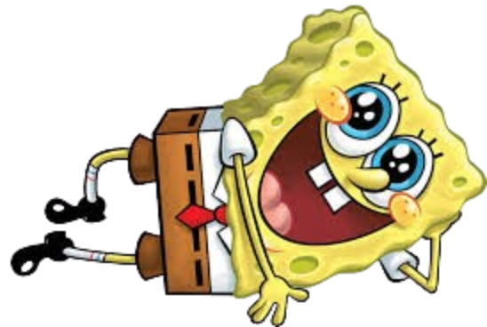

é uma esponja marinha bondosa, otimista, alegre, ingênua e amigável que mora na cidade submarina da Fenda do Biquíni juntamente com diversas criaturas antropomórficas.
horas vagas, Bob Esponja se diverte "caçando água viva", praticando caratê ou até mesmo soltando bolhas de sabão.
horas vagas, Bob Esponja se diverte "caçando água viva", praticando caratê ou até mesmo soltando bolhas de sabão.divertir-se na companhia de seu melhor amigo e vizinho, Patrick Estrela.
um caracol de estimaçaõ chamado Gary.
outro lado da rua do Siri Cascudo fica um restaurante rival sem sucesso chamado Balde de Lixo.
tem clientes devido à venda de comida à base de isca , que é considerada canibalística pela maioria da população de peixes.
É administrado por um pequeno copépode verde de um olho só chamado Plankton e sua esposa computadorizada, Karen .
tenta constantemente roubar a receita secreta dos hambúrgueres de siri do Sr. Siriguejo.
Bob Esponja não está trabalhando no Siri Cascudo, ele pode ser encontrado frequentemente tendo aulas de barco com a Sra. Puff , um baiacu paranoico, mas paciente.
Esponja quer obter uma carteira de habilitação para pilotar barcos, mas frequentemente entra em pânico e bate o barco, fazendo com que ele seja reprovado no curso várias vezes.
é uma amiga próxima de Bob Esponja Calça Quadrada , tendo-o conhecido após ser resgatada de uma ostra gigante.
é uma texana orgulhosa e fala com um sotaque sulista.
Ela vive dentro da cúpula, seu traje normal consiste em um biquíni verde e roxo.
Dentro da cúpula, seu traje normal consiste em um biquíni verde e roxo.
Por outro lado, como revelado em Chá na Cúpula , outros personagens devem usar "capacetes de água" com funcionalidade oposta quando visitam sua casa.
Sandy possui habilidades científicas extraordinárias, como a capacidade de construir invenções complexas.
Sandy demonstra possuir uma série de traços de personalidade e interesses de uma garota durona e moleca; ela é habilidosa em caratê , pratica fisiculturismo e é campeã de rodeio.
Ela também é uma amiga próxima de Patrick Estrela , o melhor amigo e vizinho de Bob Esponja, embora às vezes se irrite com ele, assim como Lula Molusco.
